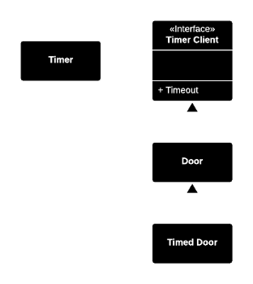
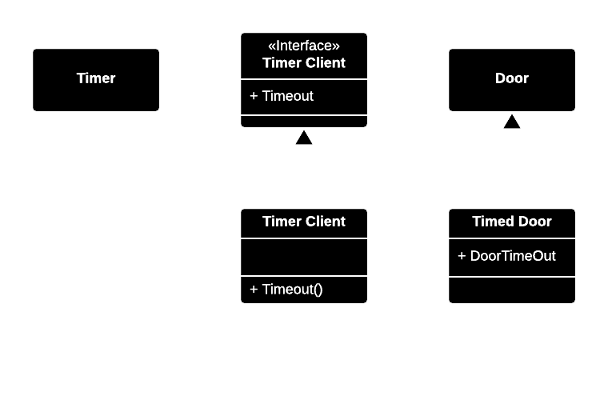
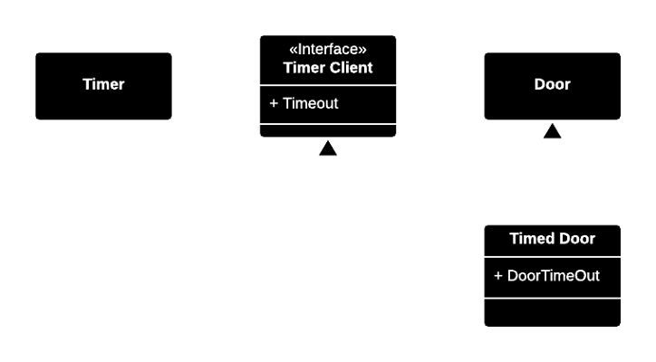

Clients should not be forced to depend on methods that they do not use.
Presentation by Kristjan Siimson / @ksiimson
Robert C. Martin “Agile Software Development: Principles, Patterns and Practices”
Deals with functional relatedness of interfaces. While interface of one class may have a low level of functional relatedness, it could have multiple interfaces, each of which has a high level of functional relatedness.
Useful for breaking up software into smaller pieces.

Not all doors have timers. Door should not implement Timer Client.
If new method is added to Timer Client, all implementations of Door need to be modified.

Better. The necessity of having to create adapter objects makes it slightly unelegant.

Cleaner structure with multiple inheritance.
function rolloverAndIssue(LoanRollover $loanRollover, LoanIssue $loanIssue) {
$loanRollover->execute();
$loanIssue->execute();
}
// Implements both rollover and issue
$service = new LoanService();
rolloverAndIssue($service, $service);
Separate arguments for each interface, even if implemented by the same class.
If multiple clients call the same service methods, then their interfaces can be grouped together. This greatly reduces the number of interfaces.